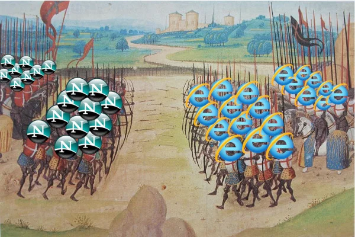
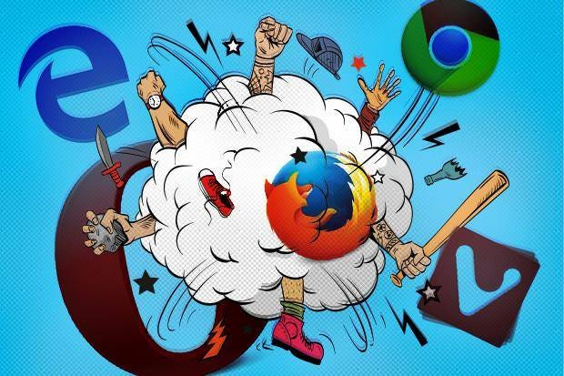

The First Browser War:
The first browser war was a battle for dominance between Microsoft's Internet Explorer and Netscape Navigator from 1995 to 2001. Public and media interest in the Web had grown considerably by mid-1995. Though Netscape Navigator dominated the market, Microsoft entered the market that August with Internet Explorer 1.0, built from a licensed version of Mosaic and bundled with Windows 95 (The History of Domain Names, n.d.). While Netscape kept fees for some, Internet Explorer was available free to everyone. Competitors quickly followed suit by offering their browsers at no cost. The following years saw a steady stream of updates from both browsers, bringing innovations such as Netscape's JavaScript and proprietary HTML tags, with the market's first commercial CSS support arriving in Internet Explorer 3. Relying on a single product, Netscape was financially vulnerable, whereas Microsoft could subsidize a free Internet Explorer with its Windows earnings (Paul, 2025). Microsoft easily gained market share by packaging Internet Explorer with every copy of Windows by 2004 and preinstalling it as the default. In 1998, a $4.2 billion acquisition brought Netscape under America Online's ownership, and Internet Explorer seized control of the market.

The Second Browser War:
The second browser war, a heated rivalry between Internet Explorer, Firefox, and Google Chrome from 2004 to 2017 (Skyle, 2022). As Netscape Navigator faded, the company open-sourced its code and handed it to the new non-profit Mozilla Foundation. After years of little progress, a lightweight, browser-only version emerged, eventually landing on the name Firefox. Firefox 1 debuted in November 2004, and its market share rose steadily, peaking at just under a quarter of all users in 2010. As the technologies behind interactive web pages, such as the DOM, scripting, and AJAX, became more important and the WHATWG formed in 2004, browsers began competing on standards compliance rather than on proprietary features (WHATWG, 2004). This marked a turn away from vendor lock-in in the first browser war, toward a more open, interoperable web where sites could work consistently across browsers. Contrary to its 2003 announcement that IE6 SP1 would be the last standalone version, Microsoft put out Internet Explorer 7 in 2006 and 8 in 2009 (Hansen, 2003). Neither version kept pace with rivals on web standards, and Internet Explorer's hold on the market weakened steadily. After releasing IE9, 10, and 11, Microsoft moved on to Edge Legacy as part of the 2015 Windows 10 launch (Finley, 2016). Around the same time, Opera, a browser celebrated for pioneering features such as tabbed browsing, dropped its price. During this period, Apple also created WebKit from KHTML, which is the engine behind Safari. The landscape started to change with Chrome's arrival in September 2008, which brought together the WebKit engine, Google's quick V8 JavaScript engine, and a fast update cycle that Mozilla quickly mirrored. It did not take long for Chrome to become the world's favorite browser. Chrome's worldwide share topped 60% in 2017, leaving Firefox, Opera, and Internet Explorer each below 5%. As a result, Mozilla's former CTO, Andreas Gal, named Chrome the winner of the Second Browser War (Gal, 2017).
